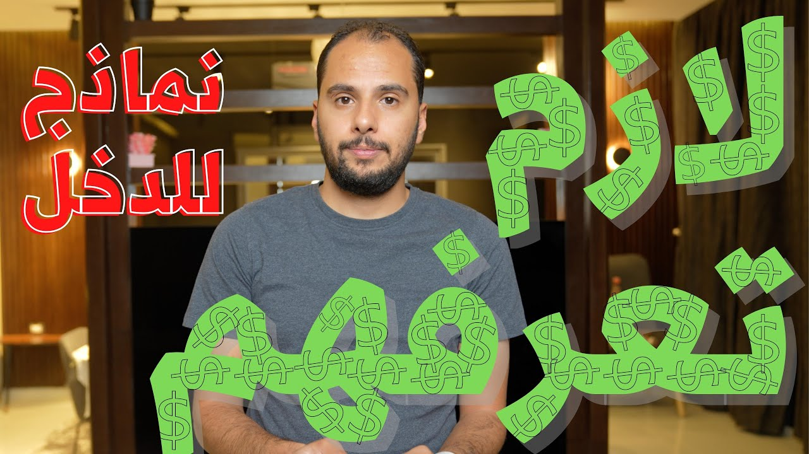

فلوس ومصادر دخل
كيف يتدفق المال في حياتك؟ - cashflow quadrant
اتنين أخدوا نفس العقد عشان يوصّلوا المية لقرية: واحد شال جردل، والتاني مدّ مواسير. من القصة دي بيشرح Robert Kiyosaki الأنماط الأربعة لتدفق المال، وهتعرف الفرق بين الدخل الإيجابي والدخل السلبي، وليه في رأيي التنويع أهم من النمط اللي إنت فيه.

شغّل الحلقةفيه فنانين كانوا نجوم في أيامهم، ولسه بريق نجوميتهم بيلمع لحد دلوقتي، زي إسماعيل ياسين. وعلى المستوى المادي، دخله كان كبير. والحكاية المشهورة بتقول إنه مات وهو بيعاني ماديًا وما سابش وراه حاجة. المنشور عنه إن الديون اتراكمت عليه في آخر حياته، ومصلحة الضرائب حجزت على بيته،1 وإن كانت حفيدته بتنفي إنه مات فقير.2
وفيه نجوم كتير دخلهم كان كبير وانتهت حياتهم فقرا، لأنهم غلطوا غلطة بيغلطها معظم الناس في تعاملهم مع الفلوس. والغلطة دي مالهاش أي علاقة بالتحويش أو بتقليل النفقات؛ في رأيي، حتى لو كانوا عملوا كده، كانوا هيوصلوا لنفس النتيجة. في المقال ده هتعرف الغلطة دي إيه، وإزاي تتجنبها في حياتك.
قصة الجردل والمواسير: اتنين حلّوا نفس المشكلة إزاي؟ 1:09
Robert Kiyosaki في كتابه Cashflow Quadrant (النموذج الرباعي للتدفق النقدي) حكى قصة عن قرية صغيرة، أهلها كانوا بيعانوا من مشكلة كبيرة: قلة المية. المصدر الوحيد للمية كان الأمطار، فاتجمع حكماء القرية عشان يلاقوا حل نهائي. والحل كان إنهم يتفقوا مع اتنين من أهل القرية يتولوا مهمة توفير المية ويبيعوها. واختاروا اتنين تحديدًا عشان يكون فيه منافسة بينهم على السعر والخدمة، ولو حد فيهم حصل له مشكلة، يفضل التاني موجود.
اتطوع اتنين: هسميهم عزام وزكي، لأني غيرت الأسماء اللي في القصة الأصلية عشان ما تحصلش لخبطة. عزام بدأ من أول لحظة يشتري أدواته: جردلين مية وحبل، ونزل تاني يوم قبل شروق الشمس ينقل المية للقرية. الشغلانة كانت مرهقة جدًا، بيشتغل من الشروق للغروب، لكن الدخل كان ممتاز، خصوصًا إن زكي ما كانش بدأ أصلًا.
أما زكي فساب القرية من تاني يوم، وقعد يدرس مشروعه كويس، وقدر يقنع مستثمرين يموّلوا فكرته، ورجع بعد 6 شهور تقريبًا ومعاه عمال ومعدات.3 فكرته كانت إنه يمد مواسير توصّل المية للقرية. وأعلن إن مشروعه ليه 3 ميزات تنافسية مش موجودة عند عزام: المية أنضف، لأن مفيش أي تدخل بشري، هي مواسير ممدودة وفي آخرها حنفية. والمية متوفرة 24 ساعة، وطول أيام الأسبوع، عكس عزام اللي ما كانش بيشتغل في الأجازات وبيغطي بس الفترة من الشروق للغروب. والتالتة السعر: أقل بنسبة 75% من المنافس بتاعه.3
الميزات دي خلت أهل القرية يروحوا لزكي، وأجبرت عزام إنه يخفض سعر المية عشان يقدر يكمل. حاول يدخّل أولاده معاه في المشروع عشان لو تعب أو عجز، لكن أولاده ما رجعوش للقرية تاني بعد ما اتخرجوا من الجامعة. وفي الناحية التانية، زكي بدأ يدور على قرى تانية عندها نفس المشكلة عشان ينسخ فيها مشروعه.3
الاتنين لقوا منجم دهب، وكل واحد اتعامل معاه بطريقة مختلفة: واحد قرر ينقل الدهب بجردل، والتاني وصّل المنجم بمواسير تنقل له الدهب حتى وهو نايم. عزام اعتمد على مجهوده بس، فدخله بقى على قد مجهوده. أما زكي فاستخدم ذكاءه، وخلّى مشروعه يقدم فايدة وقيمة وتأثير أكبر بكتير، فدخله بقى على قد تأثيره والفايدة اللي بيقدمها.
إيه الفرق بين الدخل الإيجابي والدخل السلبي؟ 3:54
عزام وزكي في الحقيقة بيمثلوا مصادر الدخل اللي بيعتمد عليها كل البشر. عزام بيمثل الناس اللي مصدر دخلها الأساسي هو الدخل الإيجابي: الدخل اللي معتمد في الأساس عليك إنت. لو عزام في يوم ما نزلش الشغل، اليوم ده مش هيدخل له فلوس.
والدخل الإيجابي هو اللي بيعتمد عليه معظم الناس: موظفين، أو أصحاب حرف ومهارات، زي الصنايعية والفنانين ولعيبة الكورة. وفيه الدخل بيتوقف لو إنت بطلت شغل. دي الفئة اللي بتشتغل من أجل المال.
أما زكي فبيمثل الفئة التانية، اللي مصدر دخلها الأساسي هو الدخل السلبي: دخل مش معتمد على وجودك إنت كشخص. زي إنك تشتري بيت وتأجّره، فيدخل لك دخل مش مرتبط بإنك تنزل شغلك. أو زي المستثمرين اللي عندهم شركات كبيرة شغالة لوحدها وبتجيب أرباح من غير أي تدخل منهم. وده اللي عمله زكي لما شاف احتياج القرية للمية: أسس مشروع يشتغل لوحده ويجيب له دخل حتى وهو نايم. ودي الفئة اللي المال بيشتغل من أجلها.
عشان كده أنا شايف إن كل واحد فينا لازم يهتم بتنويع مصادر دخله، بحيث يكون فيها دخل إيجابي معتمد علينا، ودخل سلبي مش معتمد علينا. طب إزاي تعمل ده؟ لازم الأول تفهم الأنماط الأربعة لتدفق المال اللي اتكلم عنها Kiyosaki. وما تتخضّش من المصطلح؛ الموضوع أبسط مما يبان.
إيه هي الأنماط الأربعة في Cashflow Quadrant؟ 5:21
Kiyosaki في الكتاب حب يتعمق أكتر في مصادر الدخل، فقسمها لأربع أنماط، شكلها مربع متقسم لأربع خانات. النمط الأول هو الـE، الموظف، اللي بيعتمد في دخله على المرتب. وتحته على طول الـS، المتخصص أو المهاري: الصنايعية، وأصحاب المهارات، وأصحاب المشاريع الصغيرة. النمطين دول بيندرجوا تحت الدخل الإيجابي، وفي رأيي هما من أسهل مصادر الدخل.
وفي الناحية التانية الـB، رجل الأعمال أو صاحب المشاريع الكبيرة: ناس تعبوا في بناء وتأسيس شركاتهم لحد ما كبرت، فعيّنوا مدير يتولى المسؤولية، وركزوا هما في حياتهم الخاصة أو في بناء شركات جديدة. وتحت الـB هتلاقي الـI، المستثمرين: اللي بيستخدموا فلوسهم في الاستثمار، يشتروا أسهم في شركات كبيرة أو يموّلوا أفكار جديدة، وعندهم خبرات ومهارات كبيرة بتأهلهم لده. والنمطين دول بيندرجوا تحت الدخل السلبي، وبيعتبروا من أصعب مصادر الدخل.
ينفع تجمع بين أكتر من نمط؟ 6:23
بحسب Kiyosaki، ممكن تجمع بين نمطين من الأنماط دي. مثلًا تكون موظف في شركة، وفي نفس الوقت بتستثمر في أسهم شركات تانية كبيرة. كده إنت جمعت بين الـE والـI، ونوّعت مصادر دخلك ما بين الدخل الإيجابي والدخل السلبي.
أو تكون موظف، وتستخدم مهارة عندك، زي الرسم مثلًا، عشان تدخّل دخل إضافي. هنا جمعت بين الـE والـS. صحيح إن دخلك كله لسه دخل إيجابي، لكنك نوّعت جواه: لو الوظيفة اتأثرت، دخلك مش هيتقطع تمامًا.
الأنماط مستويات؟ وليه كل نمط محتاج شخصية مختلفة؟ 7:01
ممكن كمان تبص للأنماط دي على إنها مستويات. ده اللي عمله كتير من رجال الأعمال العصاميين: بدأوا كموظفين في النمط E، وبعد ما اكتسبوا خبرة قرروا يعملوا مشروعهم الخاص، فدخلوا النمط S. وبعد سنين من التعب والتطوير، وصلوا بمشروعهم الصغير لشركة كبيرة، فبقوا في النمط B، وده خدهم تلقائي للنمط I، لأن بقى معاهم فلوس وخبرات ومهارات بتأهلهم يستثمروا في مشاريع وشركات كبيرة.
وسواء جمعت بين أكتر من نمط أو اتدرجت فيهم، لازم تعرف إن كل نمط محتاج شخصية مختلفة. شخصية الموظف اللي بتفضّل دايمًا دخل ثابت ومعاش مضمون، مختلفة تمامًا عن شخصية صاحب المشروع، اللي بيميل للمخاطرة ومش بيحب يكون مقيد بقوانين الوظيفة. والاختلاف مش في الشخصية بس، لأ، كمان في طريقة التفكير.
عشان كده، لو عاوز تجمع بين مصدرين للدخل أو تتدرج بين الأنماط، لازم يكون عندك المرونة إنك تغيّر شخصيتك وتكتسب مهارات جديدة تناسب النمط اللي عاوزه. وفي رأيي، أهم من إنك تدور على فكرة مشروع، إنك تكتسب مهارات وشخصية صاحب المشروع، ودي حاجة ممكن تديهالك خبرة الوظيفة. فيه مشاريع كتير فشلت بسبب أصحابها، رغم إنها أفكار مبتكرة وبتحل مشاكل حقيقية؛ ففكرة المشروع مش أهم أبدًا من شخصية صاحبه. ونفس الحكاية لو عاوز تبقى مستثمر أو رجل أعمال: لازم يبقى عندك شخصية النمط ده ومهاراته.
هل فيه نمط أحسن من التاني؟ 8:40
في رأيي الشخصي، مفيش نمط من الأنماط الأربعة أفضل من التاني. خد مثلًا Tim Cook، اللي كان وقت الحلقة الرئيس التنفيذي لشركة Apple: موظف، ومصدر دخله الأساسي في النمط E، ومع ذلك دخله أكبر بكتير من رجال أعمال ومستثمرين في النمطين B وI. ومحمد صلاح مصدر دخله الأساسي مهاراته، يعني النمط S، ومع ذلك دخله أكبر بكتير من رجال أعمال ومستثمرين.
يعني مش مهم مصدر دخلك الأساسي يكون في أنهي نمط؛ الأهم هو التنوع ما بين الدخل الإيجابي والدخل السلبي. Tim Cook وصلاح، جنب مصدر دخلهم الأساسي، بيستثمروا فلوسهم في عقارات وأسهم عشان يدخل لهم دخل سلبي، ومن المنشور إن صلاح أطلق مؤسسة للاستثمار العقاري في بريطانيا.4
وصدقني، مهما كان دخل الموظف أو المهاري عالي، فهو مش مضمون. كلنا تقريبًا عارفين قصص نجوم في الفن والكورة، وأصحاب مناصب في شركات كبيرة، كان دخلهم مهول وانتهت حياتهم فقرا، لأنهم اعتمدوا على مصدر دخل واحد: الدخل الإيجابي، اللي بيخلص بانتهاء شغلهم ومرتبط دايمًا بنزولهم الشغل. ودي الغلطة اللي اتكلمنا عنها في الأول. وعشان كده، لو لاحظت، هتلاقي نجوم كتير دلوقتي بيستثمروا في المطاعم أو العقارات، عشان يأمّنوا لنفسهم دخل سلبي، وما يواجهوش نفس المصير.
فصول الحلقة
أسئلة شائعة
يعني إيه دخل سلبي؟
الدخل السلبي هو الدخل اللي مش معتمد على وجودك إنت كشخص، زي إنك تشتري بيت وتأجّره، أو تمتلك شركة شغالة لوحدها. يعني بيدخل لك حتى وإنت نايم.
إيه هي الأنماط الأربعة لتدفق المال عند Robert Kiyosaki؟
بحسب Robert Kiyosaki: الـE الموظف، والـS المهاري أو صاحب المشروع الصغير، والـB رجل الأعمال أو صاحب المشاريع الكبيرة، والـI المستثمر. أول نمطين تحت الدخل الإيجابي، والتانيين تحت الدخل السلبي.
ينفع أكون موظف ومستثمر في نفس الوقت؟
أيوه، بحسب Kiyosaki ممكن تجمع بين نمطين، زي إنك تكون موظف في شركة وبتشتري أسهم في شركات تانية. كده بتجمع بين الـE والـI، وبتنوّع دخلك بين الإيجابي والسلبي.
هل فيه نمط أحسن من التاني؟
في رأيي لأ: Tim Cook كان وقت الحلقة موظف في النمط E، وصلاح مصدر دخله مهاراته في النمط S، والاتنين دخلهم أكبر بكتير من رجال أعمال ومستثمرين. الأهم هو التنوع ما بين الدخل الإيجابي والدخل السلبي.
تصحيحات
- في أول الحلقة قلت إن عبد الحليم وإسماعيل ياسين الاتنين تقريبًا ماتوا وهم بيعانوا ماديًا. ما لقيتش مصدر بيقول ده عن عبد الحليم، فشلته من المقال. وعن إسماعيل ياسين، المنشور إن الديون اتراكمت عليه في آخر حياته ومصلحة الضرائب حجزت على بيته،1 لكن حفيدته بتنفي إنه مات فقير وبتقول إنه اتوفى في شقة فاخرة في الزمالك.2
- في قصة المواسير قلت إن زكي أقنع 3 مستثمرين؛ في القصة زي ما Kiyosaki حكاها، صاحب المواسير لقى 4 مستثمرين.3
- قلت إن مشروع المواسير خد 90% من السوق؛ النسبة دي مش موجودة في القصة، اللي بتقول بس إن أهل القرية جريوا على الحنفية اللي في آخر الماسورة.3
- قلت إن المية هتبقى متوفرة 24 ساعة في الأسبوع؛ اللي في القصة 24 ساعة في اليوم و7 أيام في الأسبوع. وفي القصة المية جاية من بحيرة على بعد ميل، مش من نهر.3
- قلت إن حوالي 80% من سكان كوكبنا بيعتمدوا على النمطين E وS؛ ما لقيتش مصدر أقدر أحطه للرقم ده، فشلته من المقال.
المصادر
- al-ain.com https://al-ain.com/article/ismail-yassin-egypt-artist-birthday
- sayidaty.net https://www.sayidaty.net/node/1836791
- creuniversity.com https://www.creuniversity.com/articles/building-pipeline-to-wealth-cashflow-quadrant
- emaratalyoum.com https://www.emaratalyoum.com/sports/arab-and-international/2021-02-26-1.1459542